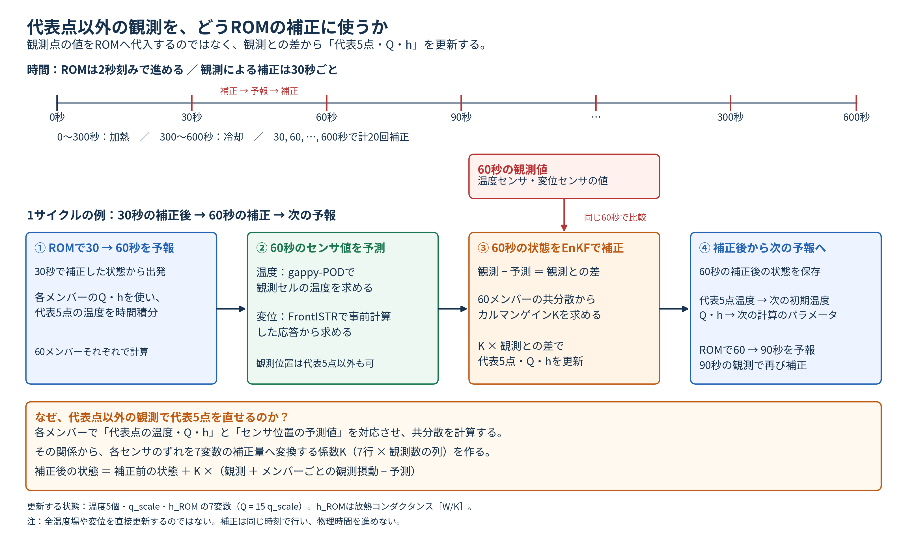
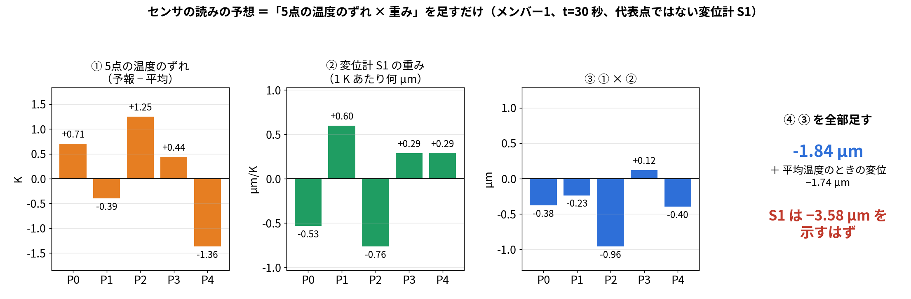
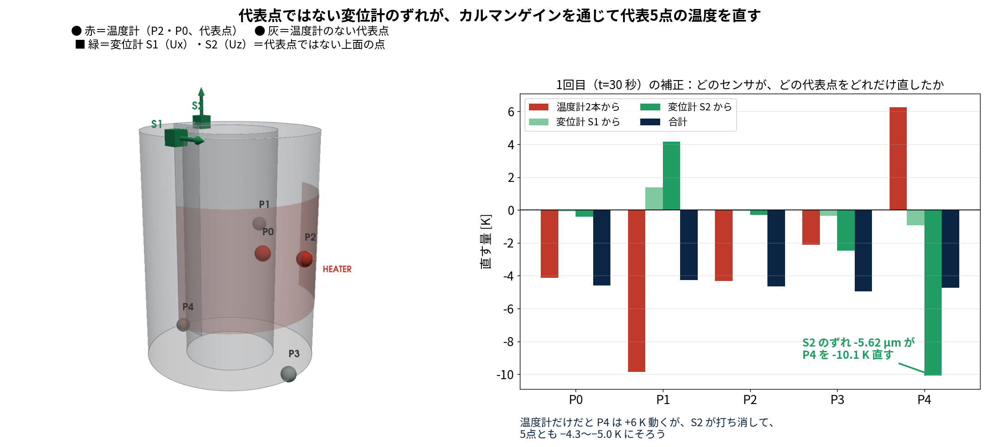
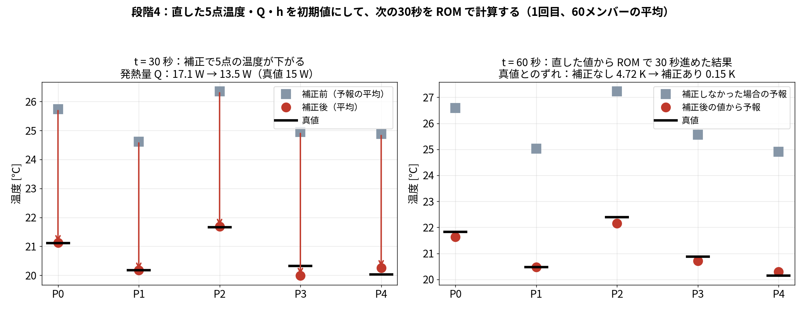
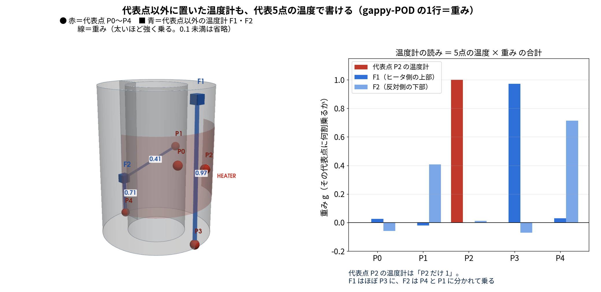

この記事では、本研究の主な結果
データ同化なし 4.6 K → 温度2点＋変位2点 でデータ同化すると 0.16 K、発熱量は真値 15 W に対して 14.9 W
を出した計算が、実際に何をしているかを、センサの読みから数式まで順に追います。
数値はすべて本研究の本番の計算（run/run_da_compare.py）と、同じ計算を再実行して途中の値を記録した
run/trace_displacement_and_Q.py（結果
results/trace_displacement_and_Q.json）の実際の値です。説明用の仮の値は使っていません。
blog_006〜008 の役割分担
記事 扱うこと 真値 blog_006 データ同化の手順。温度2点＋変位2点をどう使い、なぜ発熱量が直るか ROM の双子実験 blog_007 ROM の適用範囲。条件が変わっても使えるか OpenFOAM＋FrontISTR blog_008 主張と先行研究。研究としてどこが新しいか ROM（§4・§5）と
OpenFOAM＋FrontISTR（§6・§7）数値は重複を避け、各記事が担当する検証だけを載せています。
| 内容 | |
|---|---|
| 確かめたいこと | 温度2点と変位2点の観測を、EnKF でどう使って、温度5点・発熱量・放熱を推定しているのか。とくに変位をどうデータ同化に入れるかと、測っていない発熱量がなぜ直るのか |
| 題材 | 片側にヒータ（15 W）が付いた中空円筒（外径 75 mm、内径 40 mm、高さ 100.5 mm、鋼、底面固定）。0〜300 秒加熱、300〜600 秒は自然冷却 |
| 真値（正解） | ROM で作った模擬データ（双子実験）。実機の測定ではありません |
| 観測 | 温度2点（P2・P0）＋ 上面の変位2点（A・O の \(U_z\) ）。30 秒ごとに20回 |
| ノイズ | 温度 0.30 K、変位 0.30 µm（標準偏差） |
| データ同化の設定 | EnKF、60メンバー、偏差膨張 1.02、seed 20260913〜17 の5回 |
| 推定するもの | 代表5点の温度、発熱倍率 \(q\) （ \(Q=15q\) W）、放熱係数 \(h\) の7つ |
| 評価 | 加熱期 0〜300
秒の平均。数値は本番の計算（run/run_da_compare.py）と
run/trace_displacement_and_Q.py の実測値 |
注意：この記事の構成は、評価している A・O をそのまま観測に使っています（§7-4 の循環の問題）。 A・O を測らずに当てた結果は blog_008 §5 にあります。
この記事で分かること 1. どこに何のセンサを付け、何を読んでいるか 2. 変位を「状態」に入れずに、温度から計算してデータ同化に使う方法 3. 測っていない発熱量 \(Q\) が、なぜ直るのか（実際の数値で） 4. この研究の優位性（実際にやったことで言えること）
関連：EnKF の一般的な説明は blog_003、POD と変位の写像は blog_004 §7-0、センサの置き場所は blog_005 §4-6。
左：斜めから見た図。右：真上から見た図（ヒータの周方向の範囲と、各点の高さ z）。
| センサ | 個数 | 場所 | 測るもの |
|---|---|---|---|
| 温度センサ（熱電対） | 2本 | P2（ヒータのすぐ横、高さの真ん中）と P0（同じ +X 側、高さの真ん中） | その点の温度 |
| 変位計（ダイヤルゲージ） | 2本 | 上面の A（+X 側、ヒータ側）と O（−X 側、反対側） | 上下方向にどれだけ伸びたか（ \(U_z\) ） |
題材は、片側にヒータが付いた中空円筒（外径 75 mm、内径 40 mm、高さ 100.5 mm、鋼）です。底面を固定しています。
ヒータの位置（図の朱色）：外周の +X 側に巻いたヒートマットです。
| 項目 | 値 |
|---|---|
| 中心 | +X 方向（角度 0°）、高さ 50.25 mm |
| 高さ方向の範囲 | 25.25〜75.25 mm（50 mm） |
| 周方向の範囲 | 外周に沿って 100 mm（約 −76°〜+76°） |
| 発熱 | 0〜300 秒に 15 W、300〜600 秒は切って自然に冷やす |
（102_0_openfoam_hollow_cylinder_heat_transfer/config/geometry.yaml
の設定）
この計算は本物の実験ではなく、計算で作った模擬データ（双子実験）です。センサの値は計算結果にノイズを足して作りました。

OpenFOAM で計算した温度場と、その温度場を FrontISTR に入れて計算した変形。ノイズなしの値。
| 時刻 | 温度 P2 | 温度 P0 | 変位 A | 変位 O | 反り A−O |
|---|---|---|---|---|---|
| 0 秒 | 20.00 ℃ | 20.00 ℃ | 0.00 µm | 0.00 µm | 0.00 µm |
| 30 秒 | 21.66 | 21.12 | 0.97 | −0.43 | 1.40 |
| 150 秒 | 23.86 | 23.30 | 3.46 | 0.89 | 2.57 |
| 300 秒（加熱終了） | 25.77 | 25.23 | 5.78 | 3.05 | 2.73 |
| 600 秒 | 23.61 | 23.61 | 4.34 | 4.31 | 0.03 |
データ同化では、ここに温度 0.3 K、変位 0.3 µm（標準偏差）のノイズを足した値を「測った値」として使います。 （本番の計算では、この値を ROM と後述の変位の写像で作っています。OpenFOAM＋FrontISTR で直接作った上の値との差は、温度場で 0.001 K、反りで 0.001 µm でした。）
この節で知りたいこと 1. ROM・gappy-POD・データ同化は、どの順番で、いつ動いているのか 2. センサは ROM の代表5点以外にも置ける。では、代表点以外のセンサのずれを、どうやって ROM（5点）に反映させているのか 3. なぜ5点を直すだけで、全体の温度も変位も直るのか
答え 1. 30 秒ごとに「ROM で予報 → センサの読みを予想 → ずれを5点温度・ \(Q\) ・ \(h\) の直す量に換算して直す → 直した値から次の予報」を 20 回くりかえす 2. 換算表（カルマンゲイン \(K\) ）が「このセンサが 1 µm ずれたら、P4 を何 K 直すか」を教える。直した5点温度が次の ROM の初期値になる 3. 代表点以外の温度も変位も「5点温度に重みを掛けて足したもの」だから

上＝時間軸（ROM は 2 秒刻み、補正は 30 秒ごとに 20 回）／中＝1サイクルの例（①予報 → ②センサ値の予測 → ③EnKF で補正 → ④次の予報へ）／下＝代表点以外の観測で代表5点を直せる理由。
| 項目 | 値 |
|---|---|
| ROM の時間刻み | 2 秒（4次のルンゲ・クッタ） |
| 観測・補正のタイミング | 30 秒ごと（ \(t=30, 60, 90, \dots, 600\) 秒の 20 回） |
| 1回の予報 | 2 秒 × 15 ステップで 30 秒進める |
| ヒータ | 0〜300 秒 ON（15 W） |
| メンバー数 | 60（「発熱量や温度が少しずつ違う」計算を 60 通り同時に回す） |
予報している 30 秒の間は、センサを使いません。補正する瞬間は、時間を進めません。 この2つが交互に来ます。
| 何をするか | 例（1回目） | |
|---|---|---|
| ① 予報 | 60 メンバーそれぞれを ROM で 30 秒進める。計算するのは代表5点の温度だけ | 60 メンバーの平均で P4 ＝ 298.03 K（真値 293.18 K） |
| ② センサ値の予測 | 各メンバーについて「このメンバーの温度が正しいなら、センサは何を示すはずか」を計算する | 変位計2（代表点以外）の予想の平均 ＝ 5.178 µm |
| ③ 補正 | 予想と実測のずれを、5点温度・ \(q\) ・ \(h\) の直す量に換算して直す | 実測 −0.443 µm、ずれ −5.62 µm → P4 を −10.07 K 直す |
| ④ 次の予報へ | 直した5点温度・ \(q\) ・ \(h\) が、次の ROM の初期値になる（ \(30 \to 60\) 秒） | ― |
例の数値は、温度計2本（P2・P0）＋代表点以外の変位計2本（blog_008 §5 で選んだ上面の2点）でデータ同化したときの、seed 20260913 の1回目です。 真値は ROM の双子実験です。
| よくある理解 | 実際にやっていること |
|---|---|
| ROM で計算（代表5点） | そのとおり（①） |
| gappy-POD で復元 | センサの場所の分だけ計算する。全 20,696 セルは復元しない（②） |
| データ同化で補正（代表5点も補正される） | そのとおり。直すのは5点温度と \(q\) ・ \(h\) の 7つだけ（③） |
| ROM で計算 → 繰り返し | そのとおり。直した値から次の 30 秒を予報する（④→①） |
全セルの温度・全節点の変位は、評価のときだけ、直した5点温度から計算します。ループの中で FrontISTR は呼びません。
② と ③ は、数式で書くとこうなります（ \(i\) ＝メンバーの番号 1〜60、 \(m\) ＝センサの番号）。
② センサの場所の分だけ計算する
gappy-POD で全セルを復元すると、こういう式になります（20,696 行）。
\[ T^{(i)}_{\mathrm{all}} = \bar T + U_r\,U_{rP}^{-1}\big(T_P^{(i)} - \bar T_P\big) \]
ただし必要なのはセンサの行だけなので、その行だけを取り出して計算します。
\[ \hat y_m^{(i)} = \bar y_m + h_m^{\mathsf T}\big(T_P^{(i)} - \bar T_P\big) \]
\(T_P^{(i)}\) はメンバー \(i\) の5点温度、 \(\bar T_P\) はその平均、 \(\bar y_m\) は平均温度のときのセンサの値です。 \(h_m\) はセンサ \(m\) の重み（5つの数字）で、温度計なら gappy-POD の1行、変位計なら熱感度の1行です（§3-3）。 センサが4つなら4行だけ計算し、残りの 20,692 行は計算しません。
③ 直すのは7つだけ
\[ z^{a(i)} = z^{f(i)} + K\big(y + \varepsilon^{(i)} - \hat y^{(i)}\big),\qquad z = (T_0,\ T_1,\ T_2,\ T_3,\ T_4,\ q,\ h) \]
\(z^{f(i)}\) は直す前、 \(z^{a(i)}\) は直した後、 \(y\) は実測、 \(\varepsilon^{(i)}\) はメンバーごとに足す観測ノイズです。 \(K\) は「センサのずれ → 7つの直す量」の換算表で、7行 × センサの数の列です（§3-4）。 左辺が7つしかないので、直すのは5点温度と \(q\) ・ \(h\) だけです。 全セルの温度や変位は、直した5点温度から ② の式で計算し直します。
やっていることは「5点の温度のずれに、センサごとの重みを掛けて足す」だけです。
例として、メンバー1の \(t=30\) 秒の予報から、変位計1（代表点ではない上面の点、 \(U_x\) ）の読みを予想します。
| P0 | P1 | P2 | P3 | P4 | |
|---|---|---|---|---|---|
| ① メンバー1の予報温度 [K] | 297.366 | 295.304 | 298.191 | 296.583 | 293.997 |
| ② 平均の温度 [K]（事前に決まっている） | 296.659 | 295.698 | 296.938 | 296.146 | 295.361 |
| ③ ずれ ＝ ① − ② [K] | +0.707 | −0.394 | +1.253 | +0.437 | −1.364 |
| ④ 変位計1の重み [µm/K]（事前に計算） | −0.532 | +0.596 | −0.763 | +0.286 | +0.290 |
| ⑤ ③ × ④ [µm] | −0.376 | −0.235 | −0.956 | +0.125 | −0.396 |
⑤を足すと −1.837 µm。これに「平均の温度のときの変位」 −1.738 µm を足して
予想される読み ＝ −1.738 ＋ (−1.837) ＝ −3.58 µm
数式で書くと、こういう計算をしています。
\[ \hat u_{S1} = \bar u_{S1} + \sum_{k=0}^{4} w_k\,\big(T_k - \bar T_k\big) \]
| 記号 | 意味 | 値 |
|---|---|---|
| \(\hat u_{S1}\) | 変位計1の読みの予想 | これを求める |
| \(\bar u_{S1}\) | 5点が平均温度のときの、変位計1の位置の変位 | −1.738 µm |
| \(T_k\) | メンバー1の、代表点 P \(k\) の予報温度 | 表の① |
| \(\bar T_k\) | 代表点 P \(k\) の平均温度 | 表の② |
| \(w_k\) | 「P \(k\) が 1 K 上がると、変位計1の位置が何 µm 動くか」 | 表の④ |
数値を入れると、
\[ \begin{aligned} \hat u_{S1} &= -1.738 \\ &\quad + (-0.532)(297.366-296.659) + (0.596)(295.304-295.698) \\ &\quad + (-0.763)(298.191-296.938) + (0.286)(296.583-296.146) \\ &\quad + (0.290)(293.997-295.361) \\ &= -1.738 + (-0.376) + (-0.235) + (-0.956) + 0.125 + (-0.396) \\ &= -3.58\ \mu\mathrm{m} \end{aligned} \]

①5点の温度のずれ ×②重み ＝③。③を全部足して平均の変位を足すと、このメンバーが正しいときの読みになる。
重み \(w_k\) はどう作るか：変位計1の位置の「型1本あたりの変位」 \(D_{S1}\) （FrontISTR を6回解いて作る、§7-1）に、5点の温度から型の強さを出す行列 \(U_{rP}^{-1}\) を掛けたものです。
\[ w^{\mathsf T} = D_{S1}\,U_{rP}^{-1} \]
「5点の温度 → 型の強さ（ \(U_{rP}^{-1}\) ）→ その位置の変位（ \(D_{S1}\) ）」を1つにまとめた5つの数字、という意味です。
「このメンバーの温度が正しいなら、変位計1は −3.58 µm を示すはず」という意味です。 これを 60 メンバー全部で計算します。5つ掛けて足すだけなので一瞬です（この「掛けて足す」を内積と呼んでいました）。
重み（④）はどこから来るか
| センサ | 重み | 作り方 |
|---|---|---|
| 代表点の温度計（例：P2） | \((0,\ 0,\ 1,\ 0,\ 0)\) | 自分の点だけ 1 |
| 代表点以外の温度計 | 例：A の近くのセル (26.6, −1.6, 98.8) mm は \((-0.007,\ -0.016,\ -0.001,\ 0.993,\ 0.040)\) | gappy-POD の、そのセルの1行（blog_004） |
| 代表点以外の変位計 | 例：変位計1は上の表の④ | FrontISTR の熱感度 \(W\) と POD（§7-7） |
どれも事前に一度だけ計算しておく5つの数字です。代表点の温度計は「1か所だけ 1」という特別な場合にすぎません。 だから、センサを代表点以外に置いても、扱いはまったく同じです。
ここがいちばん大事なところです。4段階で説明します。数値は §3-2 と同じ1回目（ \(t=30\) 秒）です。
| センサ | 置き場所 | 実測（真値） | 予想（60 メンバー平均） | ずれ |
|---|---|---|---|---|
| 温度計 P2 | 代表点 | 294.81 K | 299.50 K | −4.69 K |
| 温度計 P0 | 代表点 | 294.26 K | 298.89 K | −4.63 K |
| 変位計1（ \(U_x\) ） | 代表点以外（上面 −y 寄り） | −1.652 µm | −2.312 µm | +0.66 µm |
| 変位計2（ \(U_z\) ） | 代表点以外（上面・ヒータの反対側） | −0.443 µm | 5.178 µm | −5.62 µm |
最初の予報は全体に温度が高すぎる（平均 17 W で計算しているが真値は 15 W、初期温度も高め）ので、ずれが大きく出ています。
ずれは「センサの場所・センサの単位」の量です。直したいのは「代表5点の温度と \(q\) ・ \(h\) 」です。 この2つをつなぐ換算表がカルマンゲイン \(K\) です。1回目の実際の値はこうでした。
| 直すもの ＼ センサ | 温度計 P2 | 温度計 P0 | 変位計1 | 変位計2 |
|---|---|---|---|---|
| P0 の温度 [K] | +0.265 | +0.623 | −0.110 | +0.070 |
| P1 の温度 [K] | +1.579 | +0.526 | +2.107 | −0.743 |
| P2 の温度 [K] | +0.659 | +0.265 | −0.068 | +0.051 |
| P3 の温度 [K] | −0.875 | +1.345 | −0.541 | +0.439 |
| P4 の温度 [K] | −0.401 | −0.945 | −1.407 | +1.792 |
| \(q\) （発熱の倍率） | +0.368 | −0.504 | −0.201 | +0.132 |
単位は「センサが 1 K（温度計）または 1 µm（変位計）ずれたときに、その行を何だけ直すか」。
読み方：変位計2の列を見ると、「変位計2が 1 µm ずれたら、P4 を 1.792 K、P3 を 0.439 K、 \(q\) を 0.132 直す」。 変位計2はヒータの反対側の上面にあるので、反対側の P4 と強く結びついています。
段階1のずれ × 段階2の換算表 です。
| 直すもの | 温度計2本から | 変位計1から | 変位計2から | 合計 |
|---|---|---|---|---|
| P0 の温度 | −4.13 K | −0.07 K | −0.39 K | −4.60 K |
| P1 の温度 | −9.84 K | +1.39 K | +4.18 K | −4.27 K |
| P2 の温度 | −4.32 K | −0.05 K | −0.29 K | −4.66 K |
| P3 の温度 | −2.13 K | −0.36 K | −2.47 K | −4.95 K |
| P4 の温度 | +6.26 K | −0.93 K | −10.07 K | −4.75 K |
| 発熱量 \(Q\) | +9.16 W | −1.99 W | −11.15 W | −3.98 W |
代表点ではない変位計2の「−5.62 µm のずれ」が、ROM の状態である P4 を −10.07 K、発熱量を −11.15 W 直しています。 温度計2本だけだと P4 は逆に +6.26 K 動いてしまいますが、変位計2がそれを打ち消して、5点すべてが −4.3〜−5.0 K とそろって下がりました（直す前の予報と真値との差は −4.45〜−4.85 K でした）。
上の数値は 60 メンバーの平均で見たものです。実際には各メンバーに、観測ノイズと同じ大きさの乱数を足した観測を与えて、メンバーごとに直します（摂動観測）。

左：センサの位置（赤＝温度計 P2・P0、緑＝変位計 S1・S2。S1・S2 は代表点ではない上面の点）。 右：1回目の補正で、各センサのずれが代表5点をどれだけ直したか。濃い緑（S2）が P4 を大きく下げている。
P4 の直す量を数式で書くと、4つのセンサのずれ \(r_m\) に、換算表の P4 の行 \(K_{4m}\) を掛けて足しています。
\[ \begin{aligned} \Delta T_4 &= \sum_{m} K_{4m}\,r_m \\ &= \underbrace{(-0.401)(-4.69)}_{\text{P2}} + \underbrace{(-0.945)(-4.63)}_{\text{P0}} + \underbrace{(-1.407)(+0.66)}_{\text{S1}} + \underbrace{(+1.792)(-5.62)}_{\text{S2}} \\ &= +1.88 + 4.38 - 0.93 - 10.07 \\ &= -4.74\ \mathrm{K} \end{aligned} \]
やったこと：段階3で直した 5点温度・ \(q\) ・ \(h\) を、60 メンバーそれぞれの「 \(t=30\) 秒の値」として書き換え、そこから \(t=60\) 秒まで ROM を解きました。
① 書き換えた値（60 メンバーの平均。1回目、 \(t=30\) 秒）
| P0 | P1 | P2 | P3 | P4 | 発熱量 \(Q\) | 放熱 \(h\) [W/K] | |
|---|---|---|---|---|---|---|---|
| 補正前（予報） | 298.89 K | 297.77 K | 299.50 K | 298.10 K | 298.03 K | 17.09 W | 0.0202 |
| 補正後 | 294.27 K | 293.32 K | 294.83 K | 293.14 K | 293.41 K | 13.48 W | 0.0243 |
| 真値 | 294.26 K | 293.32 K | 294.81 K | 293.47 K | 293.18 K | 15 W | 0.0154 |
5点の温度は真値の近くまで下がり、発熱量も 17.09 W から真値（15 W）の方向へ動きました。 放熱 \(h\) は逆に真値から離れています（ \(h\) は 600 秒の計算では当たらない。blog_003 §4-0-b）。
発熱量が §3-4 段階3 の −3.98 W（平均だけで計算した値）と少し違うのは、実際の補正ではメンバーごとに観測ノイズ分の乱数を足し、 \(q\) ・ \(h\) を物理的にありえる範囲に切っているためです。
② 次の 30 秒で解いた式
各メンバーについて、5点の熱の出入りの式を \(t=30 \to 60\) 秒まで 2 秒刻みで 15 回解きます（4次のルンゲ・クッタ）。
\[ C_k\,\frac{dT_k}{dt} = \sum_{j} K_{kj}\,\big(T_j - T_k\big) + 15\,q\,\delta_{k,2} - h\,\big(T_k - T_{\mathrm{air}}\big) \qquad (k=0,\dots,4) \]
| 式の中のもの | どこから来た値か |
|---|---|
| 出発点（ \(t=30\) 秒の \(T_k\) ） | 段階3で直した 5点温度（①の「補正後」） |
| 発熱の倍率 \(q\) （ \(Q=15q\) ） | 段階3で直した値 |
| 放熱 \(h\) | 段階3で直した値 |
| 熱容量 \(C_k\) 、点どうしの熱の通りやすさ \(K_{kj}\) | ROM を作ったときに決めた値（ \(C\) ＝ 136.1, 322.9, 93.4, 242.9, 415.9 J/K）。データ同化では変えない |
| \(\delta_{k,2}\) | ヒータの点 P2 だけ 1（発熱は P2 に入れる。blog_004 §6-1b） |
つまり、センサの情報は「出発点の温度」と「発熱・放熱の強さ」として、次の 30 秒の計算に入ります。
③ その結果（ \(t=60\) 秒）

左： \(t=30\) 秒の補正で、5点の温度が真値（黒い線）まで下がった。右：直した値から ROM で 30 秒進めた \(t=60\) 秒の予報（赤）と、補正しなかった場合の予報（灰）。
| \(t=60\) 秒 | P0 | P1 | P2 | P3 | P4 | 真値とのずれ（5点平均） |
|---|---|---|---|---|---|---|
| 補正しなかった場合の予報 | 299.74 K | 298.18 K | 300.38 K | 298.71 K | 298.06 K | 4.72 K |
| 直した値から予報 | 294.79 K | 293.62 K | 295.31 K | 293.87 K | 293.44 K | 0.15 K |
| 真値 | 294.98 K | 293.62 K | 295.55 K | 294.02 K | 293.30 K | ― |
補正しなければ 30 秒後もずっと 4.7 K ずれたままですが、直した値から計算すると 0.15 K まで合っています。 \(t=60\) 秒では、この予報をもとに再び段階1〜3を行い、また直します。これを 30 秒ごとに 20 回くりかえします。
\[ K = C_{zy}\,\big(C_{yy}+R\big)^{-1} \]
| 記号 | 意味 | 60 メンバーから数える |
|---|---|---|
| \(C_{zy}\) | 「状態7つ」と「センサの予想」が、メンバーをまたいで一緒にどう動くか | 例：変位計2の予想が大きいメンバーほど、P4 が高い |
| \(C_{yy}\) | センサの予想どうしが一緒にどう動くか、と、予想のばらつき | |
| \(R\) | センサのノイズ（温度 0.3 K、変位 0.3 µm） | 仕様 |
センサの予想は「5点温度に重みを掛けて足したもの」なので、 \(C_{zy}\) は
\[ C_{zy} = \mathrm{Cov}\,(z,\ T_5)\;w \]
になります（ \(w\) はそのセンサの重み）。 重みの大きい点ほど強く直され、さらに「5点の温度どうし」「温度と \(q\) 」の連動を通じて、ほかの点や発熱量にも配られる、という仕組みです。 センサが代表点にあるかどうかは関係ありません。重み \(w\) さえ分かれば、どこのセンサでも換算表が作れます。
代表点以外の温度や変位は、すべて「5点温度に重みを掛けて足したもの＋定数」です。 重みを並べた行列を \(L\) 、定数を \(c\) とすると、直した後の値は
\[ L\,T_5^{a} + c = \big(L\,T_5^{f} + c\big) + L\,\big(T_5^{a}-T_5^{f}\big) \]
です（ \(f\) ＝予報、 \(a\) ＝直した後）。左辺は「直した5点温度から計算し直した値」、右辺は「予報の値＋5点の直す量を重みで写したもの」で、同じものです。
つまり、5点を直せば、全セルの温度も全節点の変位も、同じ補正を受けたことになります。 別々に直す必要はなく、互いに矛盾もしません（どれも同じ5点温度から出ているため）。
補正の式（ \(K\) ）に出てくるのはセンサの場所の予想だけです。全セルの値は式に出てきません。
| ループの中で必要か | 計算 | |
|---|---|---|
| センサの場所（2〜4 か所）の予想 | 必要 | 5つ掛けて足すだけ |
| 全 20,696 セルの温度 | 不要（評価用） | 20,696 × 5 の行列の掛け算 |
| 全 5,040 節点 × 3 方向の変位 | 不要（評価用） | 15,120 × 5 の行列の掛け算 |
| FrontISTR | 不要 | 重みは事前に計算済み |
だから 60 メンバー × 20 回でも、1回のデータ同化が数十秒で終わります。
| 条件 | 外れるとどうなるか |
|---|---|
| 温度場が POD の5モードで表せる | 熱源の位置・形が変わると表せない → ROM と gappy-POD の作り直しが必要（blog_007） |
| 線形熱弾性（重みが温度に依らない） | 大変形や、材料の性質の温度依存が強いと、「掛けて足す」が成り立たない |
| ROM の予報がそれなりに合う | 加熱のしかた（ON/OFF）が違うと合わない（blog_007 §7） |
| ノイズ \(R\) を正しく与える | ここが違うと換算表 \(K\) の強さが変わる |

参考：①観測データの作り方（双子実験）／②予報観測 \(Y_f\) の作り方／③EnKF の更新式。
この節で分かったこと - 30 秒ごとに「ROM で予報 → センサの読みを予想 → ずれを直す量に換算して直す → 直した値から次の予報」を 20 回くりかえしている。 - センサの読みの予想は「5点の温度のずれに、センサごとの重みを掛けて足す」だけ。代表点以外の温度計（重み＝gappy-POD の1行）も変位計（重み＝熱感度）も同じ扱い。 - 代表点以外のセンサのずれは、換算表 \(K\) を通じて5点温度・ \(q\) ・ \(h\) の直す量に変わり、次の ROM の初期値として反映される。 1回目の例では、ヒータ反対側の変位計の −5.62 µm のずれが、P4 を −10.07 K、発熱量を −11.15 W 直した。 - 5点を直せば、全セルの温度も全節点の変位もそろって直る（重みを掛けて足すだけの関係だから）。
以下、これを数式で1つずつ書きます。
この節は一般的なEnKFの紹介ではなく、106のコードを確認した説明です。 以下の2種類の計算を区別します。
| 確認したファイル | 観測構成・この節で確認すること |
|---|---|
run/obs_points_not_limited_to_rom.py |
代表点以外の温度2セルも観測に使えること。変位観測は使わない |
run/run_holdout_displacement_support.py |
温度P2/P0＋高W点S1/S2の \(U_z\) を使い、別のC/Dの変位を評価すること |
dacore/enkf.py |
両方の計算で共通に使う、7変数のEnKF更新 |
dacore/rom_general.py |
更新後の温度・発熱量・放熱条件を使う、次のROM時間積分 |
本記事の他の節にある \(U_x\) と \(U_z\) を用いた数値例とは観測構成が異なります。代表点以外の温度観測の試験と、変位を追加したholdout試験は別の実験であり、数値を混ぜません。
コードの Z
は60行×7列です。行はメンバー、列は代表5点の温度と2つのパラメータです。
\[ Z= \begin{bmatrix} T_0^{(1)}&T_1^{(1)}&T_2^{(1)}&T_3^{(1)}&T_4^{(1)}&q^{(1)}&h^{(1)}\\ T_0^{(2)}&T_1^{(2)}&T_2^{(2)}&T_3^{(2)}&T_4^{(2)}&q^{(2)}&h^{(2)}\\ \vdots&\vdots&\vdots&\vdots&\vdots&\vdots&\vdots\\ T_0^{(60)}&T_1^{(60)}&T_2^{(60)}&T_3^{(60)}&T_4^{(60)}&q^{(60)}&h^{(60)} \end{bmatrix}. \]
| 列（Pythonは0始まり） | 内容 | 単位 |
|---|---|---|
Z[:, :5] |
代表5点の温度 | K |
Z[:, 5] |
発熱倍率 \(q=\texttt{q\_scale}\) 。発熱量は \(Q=15q\) W | 無次元 |
Z[:, 6] |
\(h=h_{\mathrm{ROM}}\) 。各ノード共通の放熱コンダクタンス | W/K |
\(h\) は表面熱伝達率［W/(m² K)］ではありません。30秒まで予報した直後なら、この表の温度は30秒の補正前温度です。
代表5点を取り出す行列を \(P\) 、固定したPOD基底を \(\Phi\) 、セルごとの時間平均温度場を \(\overline{\mathbf T}\) とします。代表5点温度 \(\mathbf T_r^{(m)}\) から、任意の観測セル \(s\) の予測温度は、
\[ T_{s,f}^{(m)} =\overline T_s +\Phi_{s,:}(P\Phi)^+ \left(\mathbf T_r^{(m)}-P\overline{\mathbf T}\right) \]
で求めます。上付き \(+\) は擬似逆行列、 \(f\) は補正前を表します。
obs_points_not_limited_to_rom.py
の代表点外の観測予報は、実際に次の式です。
UPp = np.linalg.pinv(U[pod, :])
Yf = np.column_stack([
mean[c] + (U[c] @ UPp) @ (Z[:, :NPT] - mean[pod]).T
for c in idx
])
Z = enkf_update(Z, y, None, Rd, rng, inflation=INFL, Yf=Yf)idx
は観測セル番号です。センサ位置の温度を8個目の状態として追加せず、60メンバーの観測予報
Yf に入れます。
観測セル分だけを計算できるので、データ同化のたびに全20,696セルを復元する必要はありません。
変位のholdout試験では、FrontISTRの事前計算結果 \(\mathbf u_0,D\) から、
\[ \mathbf u_f^{(m)} =\mathbf u_0+D(P\Phi)^+ \left(\mathbf T_r^{(m)}-P\overline{\mathbf T}\right) \]
を作ります。コードではS1/S2の2成分だけを温度P2/P0の予報と並べ、4成分の
Yf にします。C/Dは評価専用で、観測に含めません。
dacore/enkf.py
は、状態と観測予報の偏差から次を計算します。
C_zy = dZ.T @ dY / (n_ens - 1)
C_yy = dY.T @ dY / (n_ens - 1)
eps = rng.multivariate_normal(np.zeros(len(y)), R, size=n_ens)
innov = (y[None, :] + eps) - Yf
gain_T = np.linalg.solve(C_yy + R, C_zy.T)
Za = Zf + innov @ gain_TdZ と dY
は、それぞれ60メンバー平均からの偏差です。この実験では計算前に、状態・観測予報の平均まわりの偏差を1.02倍しています。以下の更新式の予報値は、その処理後の値です。
温度2点＋変位2点の場合の大きさは、
\[ \underbrace{Z_a}_{60\times7} = \underbrace{Z_f}_{60\times7} + \underbrace{\mathrm{innov}}_{60\times4} \underbrace{K^{\mathsf T}}_{4\times7}. \]
最後の行で、温度の5列だけでなく、qの列とhの列も書き換えます。 変位は観測成分であり、独立した変位状態を更新するわけではありません。
メンバー \(m\) の4成分の差を、
\[ \mathbf r^{(m)}= \begin{bmatrix}r_{T_{P2}}^{(m)}&r_{T_{P0}}^{(m)}&r_{u_{S1}}^{(m)}&r_{u_{S2}}^{(m)}\end{bmatrix}^{\mathsf T} =\mathbf y_{\mathrm{obs}}+\boldsymbol\varepsilon^{(m)}-\mathbf y_f^{(m)} \]
とします。カルマンゲインの6行目（Pythonの行番号5）を \(K_{q,:}\) 、7行目（行番号6）を \(K_{h,:}\) とすると、
\[ q_a^{(m)}=q_f^{(m)}+\sum_{\ell=1}^{4}K_{q,\ell}r_\ell^{(m)}, \qquad h_a^{(m)}=h_f^{(m)}+\sum_{\ell=1}^{4}K_{h,\ell}r_\ell^{(m)}. \]
したがって、範囲制限前の発熱量の修正は、
\[ Q_a^{(m)}-Q_f^{(m)} =15\sum_{\ell=1}^{4}K_{q,\ell}r_\ell^{(m)} \]
です。温度・変位の観測との差を、共分散で決まる係数に掛けて、発熱量と放熱条件の修正量にしています。 熱収支からQ・hを別々に直接逆算する処理でも、毎回最小二乗法でROMを再校正する処理でもありません。
係数を理解するため、温度センサ \(s\) が1点だけの場合に限ると、
\[ K_{q,s} =\frac{\mathrm{cov}(q_f,T_{s,f})} {\mathrm{var}(T_{s,f})+\sigma_s^2}, \qquad K_{h,s} =\frac{\mathrm{cov}(h_f,T_{s,f})} {\mathrm{var}(T_{s,f})+\sigma_s^2}. \]
\(\sigma_s^2\) は観測誤差分散です。Qが大きいメンバーほど予測温度が高いなら、Qと温度の共分散は正になります。この条件で予測が観測より高ければ、Qを下げる方向の補正になります。hと温度の共分散が負なら、同じずれはhを上げる方向に働きます。
これは符号を説明する1点観測の例です。コードに「温度が高ければQを下げる」という条件分岐はありません。 実際の複数観測では観測間の共分散も含めた行列計算で決まり、修正方向をこの例だけでは判断できません。
データ同化ループでは、更新後に次の範囲制限を行います。
Z[:, 5] = np.clip(Z[:, 5], 0, 3) # Qは0〜45 W
Z[:, 6] = np.clip(Z[:, 6], .0001, .2) # hは0.0001〜0.2 W/K呼び出し側の Z = enkf_update(...) で、補正後の表が
Z
に入ります。次の予報では、その表を次のように使います（holdout試験の呼び出し）。
Z[:, :5] = b.rg.integrate_ensemble(
Z[:, :5], C, km, Z[:, 6], Z[:, 5], hn, ta, tb, 2.
)例えば30秒の補正後なら、ta=30, tb=60
です。
| 次のROMへ渡すもの | 変わるもの |
|---|---|
補正後の Z[:, :5] |
30秒から出発する5点の初期温度 |
補正後の Z[:, 5] |
次の区間で使用する発熱量 \(Q=15q\) |
補正後の Z[:, 6] |
次の区間で使用する放熱の強さ |
ROMの式は、
\[ C_i\dot T_i= \sum_{j\ne i}K_{ij}(T_j-T_i) +\delta_{i,i_{\mathrm{heat}}}\,15q\,\chi_{\mathrm{ON}}(t) -h(T_i-T_{\mathrm{air}}) \]
です。 \(C_i\) は熱容量［J/K］、 \(K_{ij}\) は校正済みのノード間コンダクタンス［W/K］、 \(i_{\mathrm{heat}}\) はヒータ入力ノードです。 \(\delta_{i,i_{\mathrm{heat}}}\) はそのノードだけ1、それ以外0。 \(\chi_{\mathrm{ON}}\) は \(t<300\) 秒で1、 \(t\ge300\) 秒で0です。
温度の補正は「次の計算の出発点」に、Q・hの補正は「次の計算の発熱・放熱条件」に反映されます。 Cとノード間Kはこのデータ同化で更新しません。各メンバーのq・hは観測間では一定です。300秒以降はヒータ入力が0になりますが、推定しているq自体を0に設定するわけではありません。
Qを下げることとhを上げることは、どちらも温度上昇を抑え得ます。観測の時刻歴に十分な違いが現れないと、両者を区別しにくくなります。
したがって、Q・hを状態に入れれば自動的に同定できるわけではありません。 観測予報との共分散が補正を伝える経路であり、観測情報が不足したりモデル誤差があったりすれば、温度・変位が合ってもQ・hには誤差が残り得ます。代表点以外の観測についても、使えることと良い配置であることは別です。
| 記号 | 意味 |
|---|---|
| \(T_0,\dots,T_4\) | 代表5点 P0〜P4 の温度 [K] |
| \(q\) | 発熱の倍率。発熱量は \(Q=15q\) [W]（真値は \(q=1\) 、つまり 15 W） |
| \(h\) | 放熱の係数 |
| \(i\) | 60 個のメンバーの番号（ \(i=1,\dots,60\) ） |
| \(y\) | 測った4つの値（温度2つ、変位2つ） |
| \(Y_i\) | メンバー \(i\) が正しいとしたときに、センサが読むはずの4つの値 |
7個の値を並べます。
\[ z=(T_0,\ T_1,\ T_2,\ T_3,\ T_4,\ q,\ h)^{\mathsf T} \]
| 成分 | 最初のばらつかせ方 |
|---|---|
| 温度 | 気温 20 ℃ の −3〜+12 K（一様乱数） |
| \(q\) | 0.3〜1.8（＝4.5〜27 W） |
| \(h\) | 平均 0.02、標準偏差 0.01 |
最初の 60 メンバーの平均は \(Q=17.09\) W でした。
各メンバー \(i\) を、自分の \(q_i\) と \(h_i\) を使って ROM（5点の熱回路）で 30 秒進めます。
\[ C_k\frac{dT_k}{dt}=\sum_j K_{kj}\,(T_j-T_k)\;+\;15\,q_i\,\delta_{k,\mathrm{heater}}\;-\;h_i\,(T_k-T_\mathrm{air}) \]
この記事の構成では、センサは4つです。
\[ y=\big(T(\mathrm{P2}),\ T(\mathrm{P0}),\ U_z(A),\ U_z(O)\big)^{\mathsf T} \]
温度の2つは、この構成ではたまたま代表点 P2・P0 に置いているので、状態の \(T_2\) と \(T_0\) をそのまま取り出せば済みます。 ただし、温度計は代表点に置かなくてもかまいません。 代表点以外のセルに置いた場合の手続きを、次の §7-0 で説明します。
変位の2つは状態に入っていないので、温度から計算します（§7-1 以降）。変位計の A・O も、もともと代表点ではありません。
この節で知りたいこと：ROM の状態は代表5点の温度だけ。では、代表点以外の場所に置いた温度計の読みを、どうやってデータ同化に使うのか
答え：どのセルの温度も「5点の温度に重みを掛けて足したもの」で書ける（gappy-POD）。その重みを観測演算子にすれば、代表点の温度計とまったく同じ扱いになる。代表点の温度計は、重みが「自分だけ 1」になる特別な場合にすぎない
温度場全体を、POD の5つの型（モード）の重ね合わせで近似します（blog_004 §2・§5）。
\[ T \approx \bar T + U_r\,a \]
| 記号 | 中身 | 大きさ |
|---|---|---|
| \(T\) | 全セルの温度 | 20,696 |
| \(\bar T\) | 全セルの平均温度（事前に決まっている） | 20,696 |
| \(U_r\) | POD の型（1列＝1つの型） | 20,696 × 5 |
| \(a\) | 型の強さ（メンバー・時刻ごとに変わる） | 5 |
この式から代表5点の行だけを取り出すと、
\[ T_P - \bar T_P = U_{rP}\,a \]
です（ \(U_{rP}\) は \(U_r\) の代表点の5行で、5 × 5 の正方行列）。 \(U_{rP}\) は逆行列を持つので（条件数 3.15）、型の強さは5点の温度から一意に決まります。
\[ a = U_{rP}^{-1}\,\big(T_P - \bar T_P\big) \]
これを元の式に戻して、セル \(j\) の行だけを書くと、
\[ T_j = \bar T_j + g_j^{\mathsf T}\,\big(T_P - \bar T_P\big),\qquad g_j^{\mathsf T} = \psi_j\,U_{rP}^{-1} \]
になります（ \(\psi_j\) は \(U_r\) の \(j\) 行目）。 \(g_j\) は5つの数字で、セルの場所だけで決まり、事前に一度計算すれば済みます。 これが gappy-POD による復元を「1つのセルについて」書いたものです。
セル \(j\) が代表点 \(k\) のとき、 \(\psi_j\) は \(U_{rP}\) の \(k\) 行目そのものです。したがって
\[ g_k^{\mathsf T} = \psi_k\,U_{rP}^{-1} = e_k^{\mathsf T} \]
（ \(\psi_k\) は \(U_{rP}\) の \(k\) 行目、 \(e_k\) は \(k\) 番目だけ 1 のベクトル）となり、 \(T_j = T_k\) がそのまま出ます。実際に計算すると、5つの代表点の重みは厳密に単位行列になりました。
| P0 | P1 | P2 | P3 | P4 | |
|---|---|---|---|---|---|
| P2 の温度計の重み | 0 | 0 | 1 | 0 | 0 |
| P0 の温度計の重み | 1 | 0 | 0 | 0 | 0 |
「状態の \(T_2\) をそのまま取り出す」のは、一般の式で重みが単位ベクトルになった特別な場合です。 別の仕組みを使っているわけではありません。
blog_007 §10 で温度計を置いた、代表点ではない2セルの重みです。
| セル | 場所 [mm] | P0 | P1 | P2 | P3 | P4 | 合計 |
|---|---|---|---|---|---|---|---|
| 自由1（ヒータ側の上部） | (35.1, −0.8, 94.6) | +0.026 | −0.020 | 0.000 | +0.972 | +0.030 | 1.007 |
| 自由2（反対側の下部） | (−32.9, −1.6, 29.7) | −0.058 | +0.406 | +0.012 | −0.071 | +0.713 | 1.002 |

左：赤い球＝代表点 P0〜P4、青い箱＝代表点以外の温度計 F1（自由1）・F2（自由2）。線の太さと数字が重み。 右：重みの棒グラフ。代表点 P2 の温度計は P2 だけ 1、F1・F2 は5点に分かれて乗る。
メンバー1の \(t=30\) 秒の予報（§7-3 と同じ値）から、自由1の温度計の読みを予想する例です。
| P0 | P1 | P2 | P3 | P4 | |
|---|---|---|---|---|---|
| ① 5点温度のずれ \(T_P-\bar T_P\) [K] | +0.707 | −0.394 | +1.253 | +0.437 | −1.364 |
| ② 自由1の重み \(g\) | +0.026 | −0.020 | 0.000 | +0.972 | +0.030 |
| ① × ② [K] | +0.019 | +0.008 | 0.000 | +0.425 | −0.040 |
足すと +0.411 K。自由1の平均温度 296.167 K に足して、予想される読み ＝ 296.58 K です。
状態は \(z=(T_0,\dots,T_4,\ q,\ h)\) の7つです。どのセンサも、読みは
\[ y_m = c_m + h_m^{\mathsf T}\,z + \varepsilon_m \]
と書け、 \(h_m\) の7つの数字だけがセンサによって違います（ \(q\) ・ \(h\) の列はどのセンサも 0）。
| センサ | \(h_m\) （ \(T_0,\dots,T_4,\ q,\ h\) の順） |
|---|---|
| 温度計 P2（代表点） | \((0,\ 0,\ 1,\ 0,\ 0,\ 0,\ 0)\) |
| 温度計 自由1（代表点以外） | \((0.026,\ -0.020,\ 0.000,\ 0.972,\ 0.030,\ 0,\ 0)\) |
| 変位計 \(U_z(A)\) | 熱感度の行 \(w_A\) を5列に並べ、 \(q\) ・ \(h\) は 0（§7-1〜7-2） |
EnKF の更新は §8〜11 と同じで、
\[ z^{a} = z^{f} + K\,\big(y - Y^{f}\big),\qquad K = C_{zy}\,\big(C_{yy}+R\big)^{-1} \]
です。予想 \(Y^{f}\) が5点温度の一次式なので、状態と予想の共分散は
\[ C_{zy} = \mathrm{Cov}\,(z,\ T_P)\;g \]
になり、重み \(g\) を通じて、どの代表点をどれだけ直すかが決まります。 自由1の温度計がずれれば、主に P3 が直り、さらに5点どうし・温度と \(q\) の連動を通じて、ほかの点や発熱量にも配られます（§3-4 の換算表と同じ仕組み）。
コードでは run/obs_points_not_limited_to_rom.py
の60行目が、この予想 \(Y^{f}\)
を作っている部分です。
Yf = np.column_stack([mean[c] + (U[c] @ UPp) @ (Z[:, :NPT] - mean[pod]).T for c in idx])U[c] @ UPp が重み \(g_c\) （ UPp ＝ \(U_{rP}^{-1}\) ）、
Z[:, :NPT] - mean[pod]
が各メンバーの5点温度のずれです。
blog_007 §10 で、温度計2本を代表点以外のセルに置いてデータ同化しました（温度のみ、変位なし、真値は ROM の双子実験、5 seed 平均）。
| 温度計2本の場所 | 温度場全体の誤差 | 推定した発熱量（真値 15 W） |
|---|---|---|
| 代表点 P2＋P0（どちらもヒータ側） | 0.528 K | 14.05 W |
| 代表点以外の2セル（自由1＋自由2、両側に分ける） | 0.258 K | 14.90 W |
代表点以外に置いてもデータ同化でき、この例では代表点 P2＋P0 より良い結果でした。 効いているのは代表点かどうかではなく、温度計がヒータ側と反対側に分かれているかどうかです。
この節で分かったこと - ROM の状態は代表5点だが、どのセルの温度も「5点温度に重み \(g_j\) を掛けて足したもの」で書ける。 - 代表点では重みが厳密に「自分だけ 1」になる。「状態をそのまま取り出す」のは一般の式の特別な場合。 - 代表点以外のセンサは、重みを観測演算子の1行にするだけで、同じ EnKF の式でそのままデータ同化に入る。 - 実際に、代表点以外の2セルに温度計を置いてもデータ同化でき、この例では P2＋P0 より誤差が小さかった（0.258 対 0.528 K）。
変位は状態に入れないので、温度から変位を計算する仕組みが要ります。 ここでは、いちばん素直な「熱感度 \(W\) を使う方法」から順に説明します。
熱弾性は温度について線形なので、温度と変位の関係は行列1つで書けます。
\[ u=W\,(T-T_\mathrm{ref}) \]
| 記号 | 中身 | 大きさ |
|---|---|---|
| \(T\) | 全 5,040 節点の温度 | 5,040 |
| \(W\) | 熱感度（温度 → 変位の表） | 15,120 × 5,040 |
| \(u\) | 全節点の変位（5,040 節点 × 3 方向） | 15,120 |
\(W\) の \((i,j)\) 成分の意味は、そのまま読めます。
節点 \(j\) の温度が 1 K 上がると、変位自由度 \(i\) が何 µm 動くか
代表5点について、上面 A・O の上下変位に対する値はこうなっています。
| P0 | P1 | P2 | P3 | P4 | |
|---|---|---|---|---|---|
| A の \(U_z\) [µm/K] | +0.329 | −0.134 | +0.261 | +0.639 | +0.115 |
| O の \(U_z\) [µm/K] | −0.141 | +0.520 | −0.343 | +0.601 | +0.573 |
「P3 の温度が 1 K 上がると A が 0.639 µm 上がる」と、物理的にそのまま読めます。
FrontISTR が解いているのは
\[ K_s\,u=H_T\,(T-T_\mathrm{ref}) \]
なので、 \(W=K_s^{-1}H_T\) です。実際に作るには2つの向きがあります。
| 向き | FrontISTR に入れるもの | 1回の求解で得られるもの | 全部欲しいときの回数 |
|---|---|---|---|
| 列で作る | 「節点 \(j\) だけ 1 K 上げる」 | \(W\) の 1列 | 5,040 回（54 秒） |
| 行で作る（随伴法） | 「点 \(i\) に単位荷重を掛ける」 | \(W\) の 1行 | 知りたい点の数だけ |
行で作る（随伴法）は、 \(K_s\) が対称であることを使います。
\[ W[i,:]=e_i^{\mathsf T}K_s^{-1}H_T=\big(K_s^{-1}e_i\big)^{\mathsf T}H_T=\lambda_i^{\mathsf T}H_T \]
\(\lambda_i\) は「点 \(i\) に単位荷重を掛けたときの変位場」です。 知りたい点に 1 N の力を掛けて1回解けば、その点の「全 5,040 節点の温度に対する感度」が丸ごと出ます。
実際に A・O
の2点で試しました（run/W_rows_by_adjoint.py）。
| やり方 | 求解回数 | 時間 | 全体構築版との差 |
|---|---|---|---|
| 随伴法（A・O の2点） | 2 回 | 0.042 秒 | 1.6×10⁻¹⁵（一致） |
| 全部作る | 5,040 回 | 54.4 秒 | ― |

変位を知りたい点が少ないなら、随伴法が速くて分かりやすいです。
ここで問題が出ます。
データ同化が推定しているもの ：代表5点の温度（T0〜T4）
W が必要とするもの ：5,040 節点の温度
↑ 5,035 点ぶんの穴があるこの穴を埋めるのが POD です（blog_004 §5）。 \(T_{\mathrm{all}}\) は全節点の温度です。
\[ T_{\mathrm{all}}=\bar T+U_r\,a,\qquad a=U_{rP}^{+}\big(T_5-\bar T_P\big) \]
モードは「5点から全節点の温度を復元する道具」であって、変位の計算のためのものではありません。
ステップ1の式に、ステップ3の温度を代入します。
\[ u=W\big(\bar T+U_r a-T_\mathrm{ref}\big) =\underbrace{W(\bar T-T_\mathrm{ref})}_{\bar u}+\underbrace{W U_r}_{D}\,a \]
\[ \boxed{\ u=\bar u+D\,a,\qquad D=W U_r\ } \]
\(D\) は「 \(W\) にモードを掛けたもの」です。モードを足しているのではありません。
| 記号 | 意味 | 大きさ |
|---|---|---|
| \(\bar u\) | 平均の温度場での変位 | 15,120 |
| \(D=WU_r\) | モード1つあたりの変位分布 | 15,120 × 5 |
\(D\) の列が5本しかないのは、温度場が5つのモードの組み合わせに限られるからです。
ここが実装上のポイントです。 \(D=WU_r\) を計算するのに、 \(W\) を作る必要はありません。
\[ D=WU_r=\big(K_s^{-1}H_T\big)U_r=K_s^{-1}\big(H_T U_r\big) \]
括弧を右に付け替えると、「 \(H_T U_r\) を右辺にして解く」になります。 そして \(H_T U_r\) の \(k\) 列目は「モード \(\varphi_k\) を温度として入れたときの熱荷重」です。
| やること | FrontISTR の操作 |
|---|---|
| \(H_T U_r\) の \(k\) 列目を作る | モード \(\varphi_k\) を節点温度として入力ファイルに書く |
| \(K_s^{-1}\) を掛ける | FrontISTR を1回実行する |
| 答え | 出てきた変位 ＝ \(D_k\) |
つまり、
「モード \(\varphi_k\) を温度だと思って FrontISTR に入れ、普通に解く」を5回繰り返す
だけで \(D\) が手に入ります（平均場で1回足して計 6回）。
# run/run_da_compare.py の build_disp_operator より
uz_mean = run_field(mean[near]) # 1回目：平均の温度場 → ū
for k in range(5):
Dmode[:, k] = run_field(Tref + U[near, k]) # 2〜6回目：モードkを温度として入れる → D_krun_field の中身は、①.cnt に節点温度を書く
→ ②fistr1 を実行 → ③変位を読む、の3つだけです。
| \(W\) から考える | \(D\) から考える | |
|---|---|---|
| 式 | \(u=W(T-T_\mathrm{ref})\) | \(u=\bar u+D\,a\) |
| 分かりやすさ | 物理的に素直（温度 → 変位の表） | モード係数という中間物が要る |
| 作るコスト | 列で 5,040 回（54 秒）／行で数回 | 6 回 |
| 保存サイズ | 194 MB（float64、全体） | 15,120 × 5 の小さな行列 |
| 実機規模 | \(W\) は数百 GB で非現実的 | モード数だけなので変わらない |
理解するときは \(W\) 、実装するときは \(D\) と考えると見通しがよくなります。 両者は \(D=WU_r\) でつながっています。
results/disp_operator.npz
に保存し、以後は読むだけにしています（キャッシュ）。
データ同化の最中に FrontISTR
を呼ぶことは一度もありません。run/build_full_disp_operator.py）。
FrontISTR は1回解くと全節点の変位を返すためで、blog_008 §5 の
15,120 通りの候補から変位計を選ぶ計算は、これを使っています。上面 A・O の上下方向だけを取り出すと、2行 × 5列です。
| \(D_1\) | \(D_2\) | \(D_3\) | \(D_4\) | \(D_5\) | |
|---|---|---|---|---|---|
| A の \(U_z\) | −0.00773 | −0.00878 | −0.00627 | −0.00654 | +0.00080 |
| O の \(U_z\) | −0.01023 | +0.01195 | −0.00722 | +0.00217 | −0.01082 |
（ \(\bar u\) は A が 3.970 µm、O が 2.601 µm）
\(D_2\) の列を見ると、モード2が増えると A は下がり（−0.0088）、O は上がり（+0.0120）ます。 モード2は「片側だけ熱い」パターンなので、反りを作るモードだと読めます。
§7-1 でできた道具を、データ同化で使う順に並べます。
| 手順 | 計算 | 行列の大きさ |
|---|---|---|
| ① 5点の温度 → モードの混ぜ具合 \(a\) | \(a=U_{rP}^{+}(T-\bar T_P)\) | 5×5 |
| ② 混ぜ具合 → 変位 | \(u=\bar u+D\,a\) | 2×5（A・O の場合） |
FEM を解かないので一瞬で終わります。 これが ROM を軽くできる理由の一つです。
① 5点の温度から POD の係数を出す。 5点で測った温度と平均場との差 \(\delta\) から、係数 \(a\) を出します。
\[ \delta=T-\bar T_P,\qquad a=U_{rP}^{+}\,\delta \]
\(\bar T_P\) は平均場の5点の温度、 \(U_{rP}^{+}\) は「5つのモードの、5点での値」を並べた 5×5 行列の逆行列です。
| P0 | P1 | P2 | P3 | P4 | |
|---|---|---|---|---|---|
| \(\bar T_P\) [K] | 296.659 | 295.698 | 296.938 | 296.146 | 295.361 |
\(U_{rP}^{+}\) （5×5。行が係数 \(a_1\dots a_5\) 、列が P0〜P4）：
| P0 | P1 | P2 | P3 | P4 | |
|---|---|---|---|---|---|
| \(a_1\) | −6.07 | −5.79 | −23.65 | −48.48 | −59.24 |
| \(a_2\) | −9.37 | 17.62 | −38.45 | −12.46 | 25.62 |
| \(a_3\) | −6.28 | 10.84 | 25.54 | −39.01 | 15.94 |
| \(a_4\) | −23.63 | −10.71 | 14.85 | 14.41 | 5.41 |
| \(a_5\) | 7.84 | −32.51 | −2.49 | 5.48 | 21.81 |
（値が大きく見えるのは、モード \(\varphi_k\) を 20,696 セル全体で長さ1にそろえているので、1セルあたりの値が小さいためです。）
② 係数から変位を出す。
\[ \begin{pmatrix}U_z(A)\\U_z(O)\end{pmatrix}=\bar u+D\,a \]
| 値 | |
|---|---|
| \(\bar u\) （平均場の変位） | A：3.970 µm、O：2.601 µm |
| \(D\) の A 行（モード1〜5） | −0.0077, −0.0088, −0.0063, −0.0065, +0.0008 |
| \(D\) の O 行（モード1〜5） | −0.0102, +0.0120, −0.0072, +0.0022, −0.0108 |
①と②をつなげると、温度から変位への行列 \(W=D\,U_{rP}^{+}\) （2×5）になります。 これが熱感度です。
| 5点の温度が 1 K 上がると | P0 | P1 | P2 | P3 | P4 |
|---|---|---|---|---|---|
| A がどれだけ動くか [µm/K] | +0.33 | −0.13 | +0.26 | +0.64 | +0.12 |
| O がどれだけ動くか [µm/K] | −0.14 | +0.52 | −0.34 | +0.60 | +0.57 |
つまりデータ同化の中で使う変位は、次の一次式です。
\[ \begin{pmatrix}U_z(A)\\U_z(O)\end{pmatrix}=\bar u+W\,(T-\bar T_P) \]
| P0 | P1 | P2 | P3 | P4 | |
|---|---|---|---|---|---|
| 予報温度 \(T\) [K] | 297.366 | 295.304 | 298.191 | 296.583 | 293.997 |
| \(\delta=T-\bar T_P\) [K] | +0.707 | −0.394 | +1.252 | +0.437 | −1.364 |
\[ a=U_{rP}^{+}\,\delta=(28.0,\ -102.1,\ -15.5,\ 5.0,\ -12.1) \]
\[ U_z(A)=3.970+(-0.0077)(28.0)+(-0.0088)(-102.1)+\dots=4.70\ \mu\mathrm m \]
\[ U_z(O)=2.601+(-0.0102)(28.0)+(0.0120)(-102.1)+\dots=1.35\ \mu\mathrm m \]
このメンバーは「発熱が 25.2 W（ \(q=1.68\) ）で、温度も高め」という仮説なので、センサは A＝4.70 µm、O＝1.35 µm と読むはず、ということになります。 60 メンバー全部でこれを計算した平均が、 \(t=30\) 秒の予報平均 A＝6.648 µm、O＝5.186 µm です（§12 の表）。
本研究は双子実験なので、「測った値」も計算で作りました。
注意：測った値も予報も、同じ写像（7-2）で作っています。 写像そのものの誤差は、この計算の結果には出てきません。 OpenFOAM の温度場全体を FrontISTR に直接入れて計算した真値（ \(t=30\) 秒で A＝0.97 µm、O＝−0.43 µm）とは、ROM の係数を決めた 15 W の計算では 0.001 µm 程度しか違いませんでした。新しく計算した条件での違いは、別途計算中です。
更新の式（§11）は、ずれを「温度センサの分」と「変位計の分」に分けて書けます。
\[ \Delta\bar z=K_{:,T}\,d_T+K_{:,u}\,d_u \]
（右辺の1項目が温度センサの分、2項目が変位計の分。 \(K_{:,T}\) はゲインの温度の2列、 \(K_{:,u}\) は変位の2列、 \(d_T,d_u\) はそれぞれのずれ）
| 平均の補正量 | P0 | P1 | P2 | P3 | P4 | \(Q\) [W] |
|---|---|---|---|---|---|---|
| \(t=30\) 秒：温度センサの分 [K] | −4.02 | −9.35 | −5.01 | +0.55 | +3.96 | −3.51 |
| \(t=30\) 秒：変位計の分 [K] | −0.71 | +4.21 | +0.10 | −4.97 | −7.67 | −0.67 |
| \(t=150\) 秒：温度センサの分 [K] | +0.000 | +0.000 | +0.000 | +0.000 | +0.000 | +0.00 |
| \(t=150\) 秒：変位計の分 [K] | −0.081 | +0.029 | −0.110 | −0.031 | +0.036 | −0.82 |
ここがいちばん分かりにくいところなので、3段階に分けて説明します。

本番計算（seed 20260913）の実際の値。温度計は P2・P0 の2本だけで、P1・P3・P4 には温度計がない。
7-2 で見たとおり、変位は5点の温度の足し算です。
\[ U_z(A)=3.970+0.33\,T_0-0.13\,T_1+0.26\,T_2+0.64\,T_3+0.11\,T_4 \]
\[ U_z(O)=2.601-0.14\,T_0+0.52\,T_1-0.34\,T_2+0.60\,T_3+0.57\,T_4 \]
（係数は熱感度 \(W\) [µm/K]、 \(T\) は基準からの温度差）
温度計は1本で1点しか見られませんが、変位計は1本で5点すべてに触れます。 これが決定的な違いです。 特に P3（係数 +0.64 と +0.60）は、どちらの変位計にも強く効いています。
変位の予測が真値より大きければ、上の式の右辺が大きすぎる、つまりどこかの点の温度が高すぎるということです。
ただし、これだけでは「どの点が悪いのか」は決まりません。 図②は「熱感度 \(W\) × まだ分かっていない温度の幅」を点ごとに並べたものです。 P3 が 1.45 µm といちばん大きく、「P3 の温度がずれていると、変位が大きくずれる」と読めます。
最終的に決めるのは、60メンバーの共分散です。60通りの計算の中には
「変位 A を大きく予測したメンバーは、P3 の温度も高く予測している」
という関係が自然にできています。この関係が強い点ほど、変位のずれが大きく配分されます。 これは §9・§10 の \(C_{zy}\) と \(K\) そのもので、人が「P3 を直せ」と指定しているわけではありません。
更新の式を「温度計の分」と「変位計の分」に分けた内訳です（§7-5 の表と同じもの）。
\(t=30\) 秒（温度計のずれが −4.96 K、−4.86 K と大きい時期）
| P0（温度計あり） | P1（なし） | P2（温度計あり） | P3（なし） | P4（なし） | |
|---|---|---|---|---|---|
| 温度計2本による補正 | −4.02 K | −9.35 K | −5.01 K | +0.54 K | +3.96 K |
| 変位計2本による補正 | −0.71 K | +4.21 K | +0.10 K | −4.97 K | −7.67 K |
温度計を置いていない P3・P4 を、変位計が 5〜8 K も直しています。 P3・P4 は底面にあり、温度計（P2・P0、どちらも中段のヒータ側）から遠い点です。
\(t=150\) 秒（温度計のずれがほぼ 0 になった後）
| P0 | P1 | P2 | P3 | P4 | |
|---|---|---|---|---|---|
| 温度計2本による補正 | 0.000 K | 0.000 K | 0.000 K | 0.000 K | 0.000 K |
| 変位計2本による補正 | −0.081 K | +0.029 K | −0.110 K | −0.031 K | +0.036 K |
温度計のずれが 0 になると、温度計は何も直せません。この時期に温度場を直しているのは変位計だけです。
- 変位は5点の温度の足し算なので、変位計1本で5点すべてに触れる。
- 変位がずれていれば、5点の温度のどこかがずれていると分かる。
- どの点をどれだけ直すかは、60メンバーのばらつき（共分散）が決める。
- その結果、温度計を置いていない点の温度まで直る。
これが、温度2点だけの 0.503 K が、変位2点を足すと 0.160 K になる理由です（§7-6）。
同じ計算で、変位計を外して温度2点（P2・P0）だけにした結果です（5 seed
平均、run/run_da_compare.py）。
| 観測 | 温度の誤差（0〜300 秒、5点） | 最終の \(Q\) |
|---|---|---|
| 温度2点だけ | 0.503 K | 14.05 W |
| 温度2点＋変位2点 | 0.160 K | 14.89 W |
（真値 15 W）
blog_008 §5 では、A・O ではなく別の場所の変位を観測に使いました。 ROM が追いかけるのは代表5点の温度だけなのに、なぜ任意の場所の変位を観測にできるのか。ここを順に組み立てます。
EnKF が観測を使うには、「状態から観測値を計算する関数」が必要です。これを観測演算子と呼びます。
\[ y=h(z)+\varepsilon \]
状態 \(z\) は \((T_0,\dots,T_4,q,h)\) の7つしかありません。 いっぽう観測したいのは、たとえば節点 4994 の \(U_x\) です。
5つの温度から、節点 4994 の \(U_x\) を計算できるか？
これができれば観測に使えます。できなければ使えません。
答えはできるで、3つの段階をつなぐだけです。
5点の温度 T
│ ① POD（gappy 復元）
▼
全 20,696 セルの温度
│ ② 熱弾性（線形）
▼
全 5,040 節点 × 3 方向の変位
│ ③ 欲しい成分を取り出す
▼
節点 4994 の Ux① 5点 → 全体の温度（§7-1 ステップ3）
\[ T_{\mathrm{all}}=\bar T+U_r\,a,\qquad a=U_{rP}^{+}\big(T-\bar T_P\big) \]
② 温度 → 変位（§7-1 ステップ1）
\[ u=\bar u+D\,a,\qquad D=WU_r \]
③ 欲しい成分だけ取り出す
\(u\) は 15,120 個の数（5,040 節点 × 3 方向）です。そのうち1つを選ぶだけです。
①〜③をつなぐと、どの場所のどの方向の変位も、5点の温度の一次式で書けます。
\[ \boxed{\ u_{(i,c)}=\bar u_{(i,c)}+w_{(i,c)}^{\mathsf T}\big(T-\bar T_P\big),\qquad w_{(i,c)}=D_{(i,c)}\,U_{rP}^{+}\ } \]
| 記号 | 意味 | 大きさ |
|---|---|---|
| \((i,c)\) | 節点 \(i\) の方向 \(c\) （ \(U_x,U_y,U_z\) のどれか） | ― |
| \(\bar u_{(i,c)}\) | 平均の温度場でのその変位 | スカラー |
| \(D_{(i,c)}\) | \(D\) の該当行（モード1〜5に対する応答） | 5 |
| \(w_{(i,c)}\) | 5点の温度に対する熱感度 [µm/K] | 5 |
\(w\) が5つの数になることが肝心です。 状態の温度が5つしかないので、観測演算子も5つの係数で書き切れます。
選定1点目：節点 4994、(9.7, −36.2, 100.5) mm の \(U_x\)
| \(D\) の行（モード1〜5） | |
|---|---|
| \(D_{(4994,x)}\) | (−0.00206, +0.02100, −0.00877, +0.01251, −0.01364) |
これに \(U_{rP}^{+}\) を掛けると、5点温度に対する感度になります。
| P0 | P1 | P2 | P3 | P4 | |
|---|---|---|---|---|---|
| \(w\) [µm/K] | −0.532 | +0.596 | −0.763 | +0.286 | +0.290 |
\(\bar u = -1.738\) µm なので、観測演算子は
\[ U_x(4994)=-1.738-0.532\,(T_0-296.659)+0.596\,(T_1-295.698)-0.763\,(T_2-296.938)+0.286\,(T_3-296.146)+0.290\,(T_4-295.361) \]
選定2点目：節点 4909、(−34.6, 14.4, 100.5) mm の \(U_z\)
| P0 | P1 | P2 | P3 | P4 | |
|---|---|---|---|---|---|
| \(w\) [µm/K] | −0.169 | +0.595 | −0.309 | +0.427 | +0.666 |
（ \(\bar u = 2.505\) µm）
観測演算子が決まれば、あとは §7-3 以降と同じです。EnKF の式は一切変わりません。
メンバー \(m\) の予報観測は、その一次式に自分の温度を入れるだけです。
# メンバーごとの予報観測（run/disp_elsewhere_predict_AO.py より）
Yf = np.column_stack([
Z[:, TN], # 温度2点：状態からそのまま取り出す
u0 + (Z[:, :NPT] - mean[pod]) @ w, # 変位：一次式で計算する
])あとは共分散 \(C_{zy}\) とゲイン \(K\) を作って更新するだけです（§9〜§11）。
| 観測の種類 | 予報観測の作り方 |
|---|---|
| 代表点の温度 | 状態からそのまま取り出す |
| 代表点でないセルの温度 | \(T_j=\bar T_j+\psi_j U_{rP}^{+}(T-\bar T_P)\) （blog_007 §10） |
| どの節点のどの方向の変位でも | \(u=\bar u+w^{\mathsf T}(T-\bar T_P)\) |
どれも「5点温度の一次式」という同じ形です。EnKF から見れば区別はありません。
\(w_{(i,c)}=D_{(i,c)}U_{rP}^{+}\) の両方が時間によらない固定の行列だからです。
| 部品 | 作り方 | 時間で変わるか |
|---|---|---|
| \(U_{rP}^{+}\) | POD から1回 | 変わらない |
| \(D\) （全 5,040 節点 × 3 方向 × 5） | FrontISTR 6回（§7-1） | 変わらない |
FrontISTR
は1回解くと全節点の変位を返すので、6回で全節点ぶんの \(D\)
が揃います（run/build_full_disp_operator.py）。
あとは候補の行を引いて \(U_{rP}^{+}\)
を掛けるだけなので、15,120 通りの候補すべてについて \(w\) を作っても追加の FEM
は不要です。 blog_008 §5
で全候補を総当たりで採点できたのは、これが理由です。
| 条件 | 理由 |
|---|---|
| 熱弾性が温度について線形であること | \(u=W(T-T_\mathrm{ref})\) が成り立つ前提。大変形や温度依存の材料物性があると崩れる |
| 温度場が5つのモードで表せること | ①が成り立つ前提。型が変われば作り直し（blog_007 §9） |
| 変位の観測点が FEM メッシュ上にあること | \(D\) の行が必要。メッシュ外の点は補間が要る（未実施） |
限界：観測点をどこに置いても、情報の出どころは5点の温度です。 変位を増やしても、5つの数より多くの情報は引き出せません。 変位計を増やすと効くのは、ノイズに対して有利になるのと、5つの数の組み合わせの見え方が変わるためです。
\[ \bar z=\frac{1}{60}\sum_i z_i,\qquad \bar Y=\frac{1}{60}\sum_i Y_i \]
\[ dz_i=z_i-\bar z,\qquad dY_i=Y_i-\bar Y \]
偏差は 1.02 倍に広げます（インフレーション。ばらつきが縮みすぎて更新が止まるのを防ぐ）。
\[ C_{zy}=\frac{1}{59}\sum_i dz_i\,dY_i^{\mathsf T}\qquad(7\times4) \]
\[ C_{yy}=\frac{1}{59}\sum_i dY_i\,dY_i^{\mathsf T}\qquad(4\times4) \]
例えば「 \(q\) の大きいメンバーほど \(T(\mathrm{P2})\) が高い」なら、 \(C_{zy}\) の \((q,\ T(\mathrm{P2}))\) 成分は正になります。
\[ K=C_{zy}\,\big(C_{yy}+R\big)^{-1},\qquad R=\mathrm{diag}(0.3^2,\ 0.3^2,\ 0.3^2,\ 0.3^2) \]
\(R\) はセンサのノイズの大きさです（温度は K²、変位は µm²）。
\(K\) は 7×4 の行列で、「センサ \(j\) のずれ 1 単位で、状態 \(k\) をどれだけ直すか」を表します。
各メンバーで
\[ z_i\leftarrow z_i+K\,\big(y+\varepsilon_i-Y_i\big) \]
平均で見ると、次の式です。
\[ \bar z\leftarrow\bar z+K\,\big(y-\bar Y\big) \]
§11 の更新式の、 \(q\) の行だけを書きます。
\[ \bar q^{\,a}=\bar q^{\,f}+\sum_{j=1}^{4}K_{q,j}\,d_j,\qquad d=y-\bar Y \]
（ \(f\) ＝更新前、 \(a\) ＝更新後）
ゲインの \(q\) の行 \(K_{q,:}\) は、§10 の式の \(q\) の行です。
\[ K_{q,:}=\mathrm{Cov}(q,Y)\,\big(C_{yy}+R\big)^{-1} \]
1 つのセンサだけなら \(K_q=\mathrm{Cov}(q,y)/(\mathrm{Var}(y)+r)\) という割り算になりますが、4つあるので、センサどうしの重なり（同じ情報を2回数えない）も含めて逆行列で決まります。
| \(T(\mathrm{P2})\) | \(T(\mathrm{P0})\) | \(U_z(A)\) | \(U_z(O)\) | |
|---|---|---|---|---|
| \(\mathrm{Cov}(q,Y)\) | 0.312 | 0.189 | 0.218 | 0.243 |
| \(\mathrm{Var}(Y)\) （ \(C_{yy}\) の対角） | 4.82 | 4.77 | 8.32 | 12.23 |
| \(K_{q,j}\) | +0.4423 | −0.4032 | +0.0088 | −0.0005 |
ずれと寄与：
| センサ | 測った値 \(y\) | 予報平均 \(\bar Y\) | ずれ \(d\) | \(K_q\) | 寄与 \(K_q d\) |
|---|---|---|---|---|---|
| \(T(\mathrm{P2})\) | 294.542 K | 299.500 K | −4.958 | +0.4423 | −2.1929 |
| \(T(\mathrm{P0})\) | 294.028 K | 298.887 K | −4.859 | −0.4032 | +1.9592 |
| \(U_z(A)\) | 1.321 µm | 6.648 µm | −5.327 | +0.0088 | −0.0470 |
| \(U_z(O)\) | 0.063 µm | 5.186 µm | −5.124 | −0.0005 | +0.0024 |
| 合計 | −0.278 |
\[ \Delta Q=15\times(-0.278)=-4.17\ \mathrm{W} \]
内訳は、温度センサの分が −3.51 W、変位計の分が −0.67 W です。実際に \(Q\) は 17.09 W → 12.88 W になりました（ \(-4.21\) W）。式の \(-4.17\) W との差 0.04 W は、各メンバーの観測摂動 \(\varepsilon_i\) や上下限（ \(0\le q\le3\) ）の影響と考えていますが、内訳は確かめていません。
| センサ | ずれ \(d\) | \(\mathrm{Cov}(q,Y)\) | \(K_q\) | 寄与 \(K_q d\) |
|---|---|---|---|---|
| \(T(\mathrm{P2})\) | −0.013 K | 0.0198 | +0.0991 | −0.0013 |
| \(T(\mathrm{P0})\) | +0.018 K | 0.0152 | +0.0733 | +0.0013 |
| \(U_z(A)\) | −0.530 µm | 0.0158 | +0.0745 | −0.0394 |
| \(U_z(O)\) | +0.613 µm | −0.0021 | −0.0251 | −0.0154 |
センサは \(Q\) を直接は測っていません。それでも \(K_q\neq0\) になるのは、 \(\mathrm{Cov}(q,Y)\neq0\) だからです。
各メンバーは自分の \(q_i\) で 30 秒進むので、 \(q_i\) の大きいメンバーほど温度が上がり、温度が上がったメンバーほど変位も大きくなります（§7 の写像）。この「一緒に動く関係」を 60 メンバーから数えたのが \(\mathrm{Cov}(q,Y)\) で、これを通して、測った温度・変位のずれが \(Q\) に振り分けられます。
| 時刻 | 更新前 → 更新後の \(Q\) [W] | 更新後のばらつき（標準偏差）[W] | 温度の分 [W] | 変位の分 [W] |
|---|---|---|---|---|
| 30 s | 17.09 → 12.88 | 6.05 | −3.51 | −0.67 |
| 60 s | 12.88 → 10.58 | 3.29 | −0.17 | −2.27 |
| 90 s | 10.58 → 15.63 | 1.87 | +4.21 | +0.85 |
| 120 s | 15.63 → 13.15 | 1.37 | −2.46 | −0.26 |
| 150 s | 13.15 → 12.47 | 1.05 | +0.00 | −0.82 |
| 180 s | 12.47 → 13.10 | 0.83 | +0.15 | +0.49 |
| 210 s | 13.10 → 14.11 | 0.59 | +1.01 | +0.03 |
| 240 s | 14.11 → 13.71 | 0.45 | −0.24 | −0.15 |
| 270 s | 13.71 → 14.16 | 0.43 | +0.38 | +0.06 |
| 300 s | 14.16 → 14.22 | 0.40 | +0.12 | −0.08 |
| 330〜600 s | 14.22 → 14.36 | 0.39〜0.44 | ほぼ 0 | ほぼ 0 |
（初期のばらつきは 6.8 W。「温度の分」「変位の分」は \(15\times K_{q,j}d_j\) をセンサの種類ごとに足したもの）
2026-10-02 訂正：以前ここに「 \(Q\) を真値の方向へ動かした量の大部分は変位計によるもの」と書いていましたが、誤りでした。 各回の補正を「真値 15 W に近づける向きを＋」として数え直すと（
run/q_contribution_seeds.py）、この seed で温度センサ +11.56 W、変位計 −0.95 W、5 seed 平均でも温度センサ +11.40 W、変位計 −1.57 W でした。 \(Q\) を真値に近づけているのは主に温度センサです。 変位計の \(Q\) への直接の補正は、平均するとむしろ真値から遠ざける向きでした。 それでも、変位計を入れると最終の \(Q\) は良くなります（温度2点だけ 14.05 W → 変位計を足して 14.89 W、5 seed 平均）。変位計は \(Q\) を直接動かすより、温度を直すことを通して効いていると考えられますが、確かめてはいません。 - この seed の最終値は 14.36 W、5 seed 平均では 14.89 W（真値 15 W）。
この記事で分かったこと 1. 変位は状態に入れない。 温度から行列1つで計算する（ \(u=\bar u+D\,a\) 、 \(D=WU_r\) ）。データ同化中に FEM は1回も解かない。 2. 変位計1本が5点すべての温度に触れる。 だから温度計のない点（P1・P3・P4）の温度まで直る。 \(t=30\) 秒では変位計だけで P3 を −4.97 K、P4 を −7.67 K 直していた。 3. 温度計のずれが 0 になった後は、変位計だけが温度場を直している（ \(t=150\) 秒）。 4. 測っていない発熱量 \(Q\) が直るのは、60メンバーのばらつき（共分散）を通じて。 \(Q\) を真値に近づけたのは主に温度センサで、変位計の直接の寄与は小さかった（5 seed 平均で温度 +11.4 W、変位 −1.6 W）。 5. 結果：温度2点だけ 0.503 K → 変位2点を足して 0.160 K、 \(Q\) は 14.05 → 14.89 W（真値 15 W）。
| 観測 | 温度の誤差（0〜300 秒の平均、5点） | 最終の発熱量 |
|---|---|---|
| データ同化なし | 4.585 K | 16.45 W（最初のまま） |
| 温度2点＋変位2点 | 0.160 K | 14.89 W（真値 15 W） |
（5 seed 平均。 run/run_da_compare.py）
この記事で分かったことが、研究としてどういう位置にあるかは、blog_008 に独立した記事としてまとめました。 要点だけ書くと、次のとおりです。
| 内容 | 詳しくは | |
|---|---|---|
| 先行研究の調査 | 工作機械の熱変形補正は、温度を観測して変位を推定する形（ETH 2024 など）か、変位を直接測って補正する形が一般的。温度と変位を同時に観測としてデータ同化に入れた例は、調べた範囲で見当たらない | blog_008 §3 |
| 主張 | 熱変形を「補正すべき対象」から「温度場を知るための観測情報」に位置づけ直す | blog_008 §8-2 |
| この記事が支えている部分 | 変位計1本が5点すべての温度に触れるので、温度計のない点の温度まで直る（§7-5b・§14） | 本記事 |
手法そのものは新しくありません。 POD、Q-DEIM、EnKF、目的に応じたセンサ配置の考え方には先行研究があります （Teshima et al. 2024、goal-oriented sensor placement 2025）。 新しいのは組み合わせ方と、変位を観測に入れた点です。
run/limit_realsolver_truth.py）。ただし ROM
を作るのに使った条件そのものなので、合うのは当然です。新しく計算した条件（25
W、間欠加熱）での試験は blog_007 にあります。25 W
でも全セルがノイズ 0.3 K 未満で合いました。